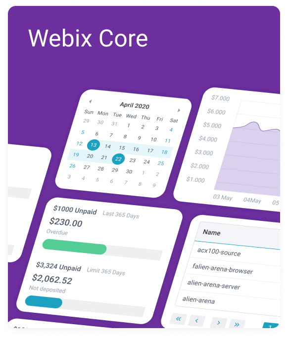 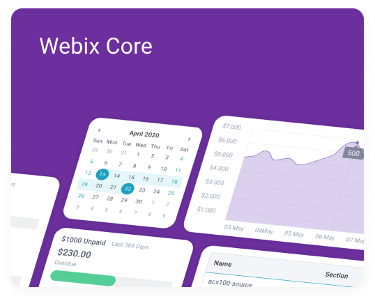
Webix Core
support of the recent version of PDF.js
mode: "auto" in webix.print() that makes the page orientation option available in a browser
export of images to Excel
export of frozen rows and columns to Excel
more supported elements and settings for Excel import and export
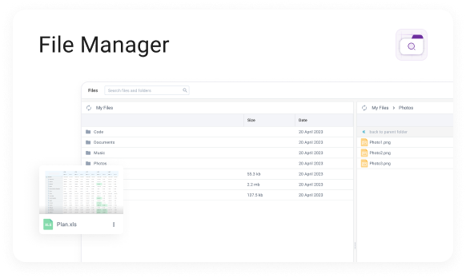 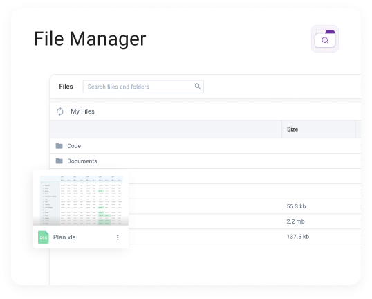
File Manager
extended filters for searchig files
Table mode for search results
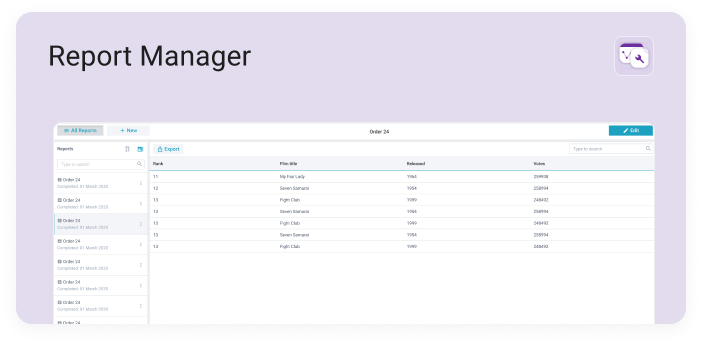 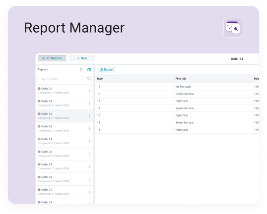
Report Manager
data facets that allow creating result reports in a form of multiple tables
the possibility to show reports as standalone widgets
Chat
typing mode for bot-generated responses
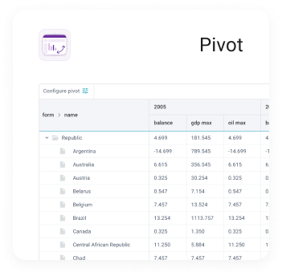 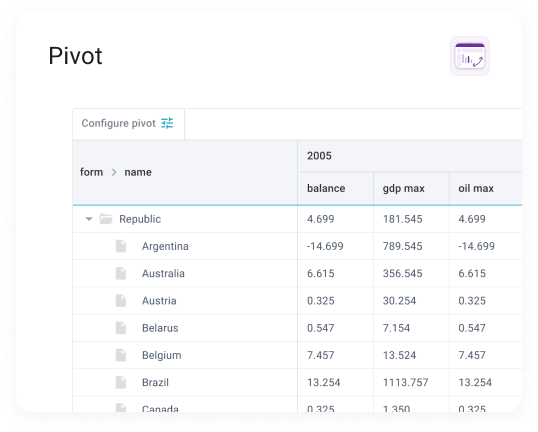
Pivot
new built-in math methods
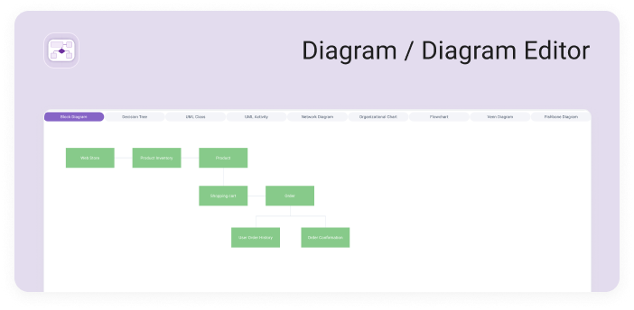 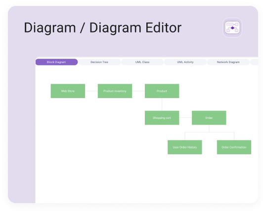
Diagram
the possibility to use standalone links not associated with any shapes
a new section called Lines is added to the Diagram editor
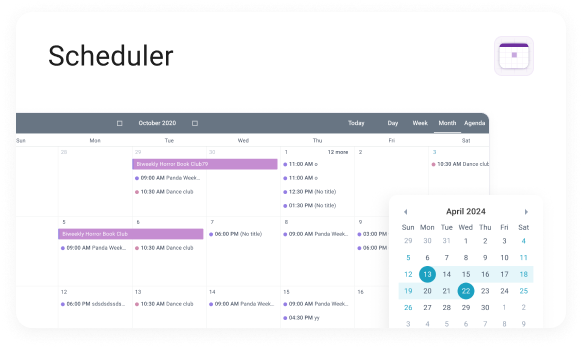 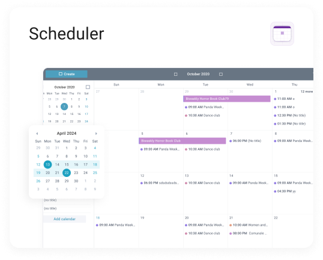
Scheduler
the possibility to specify hourly, minutely and secondly recurrences
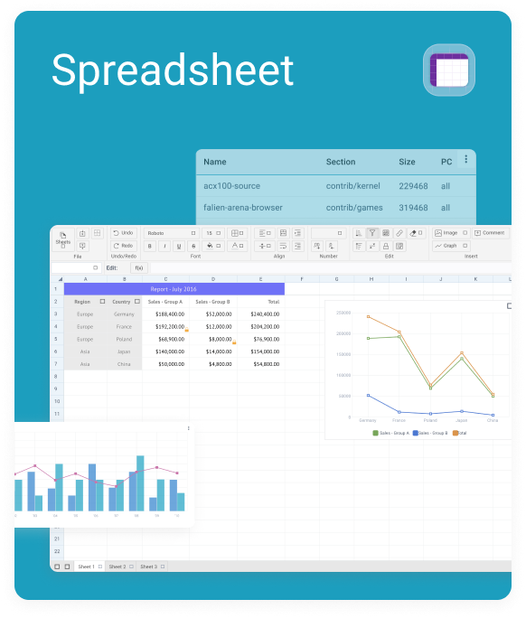 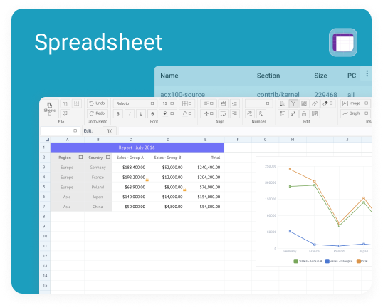
SpreadSheet
the possibility to establish rules for data validation
formula parameters suggestions
checkboxes and radios for table cells
exponentiation symbol support
support of API calls for non-active sheets
export of images to Excel
capability to get a cell reference from a cell id in a table
possibility to import filters from Excel
export frozen rows and columns to Excel
searching for and replacing data in cells
more supported elements and settings for Excel import and export
the possibility to filter methods by category
improved highlights for math